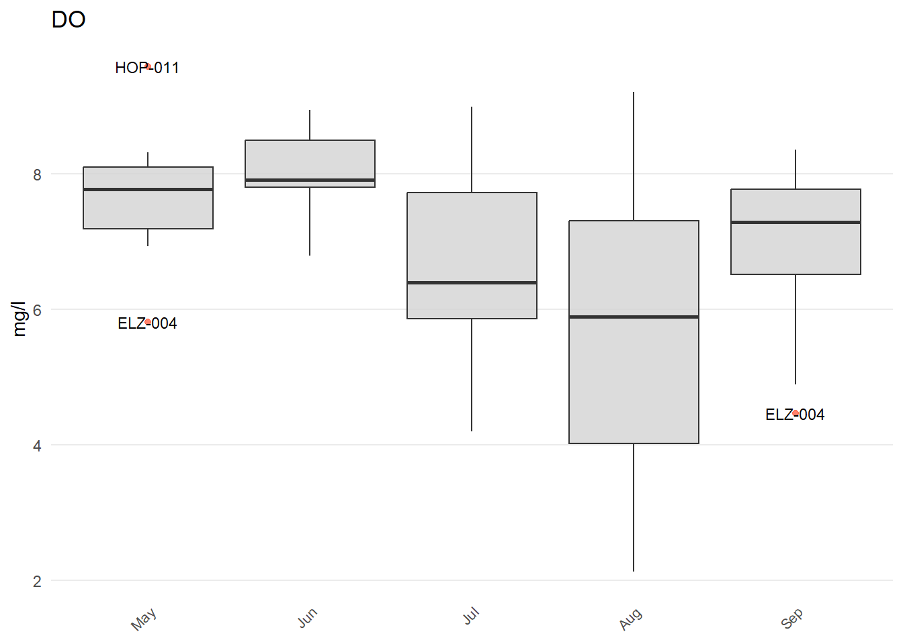
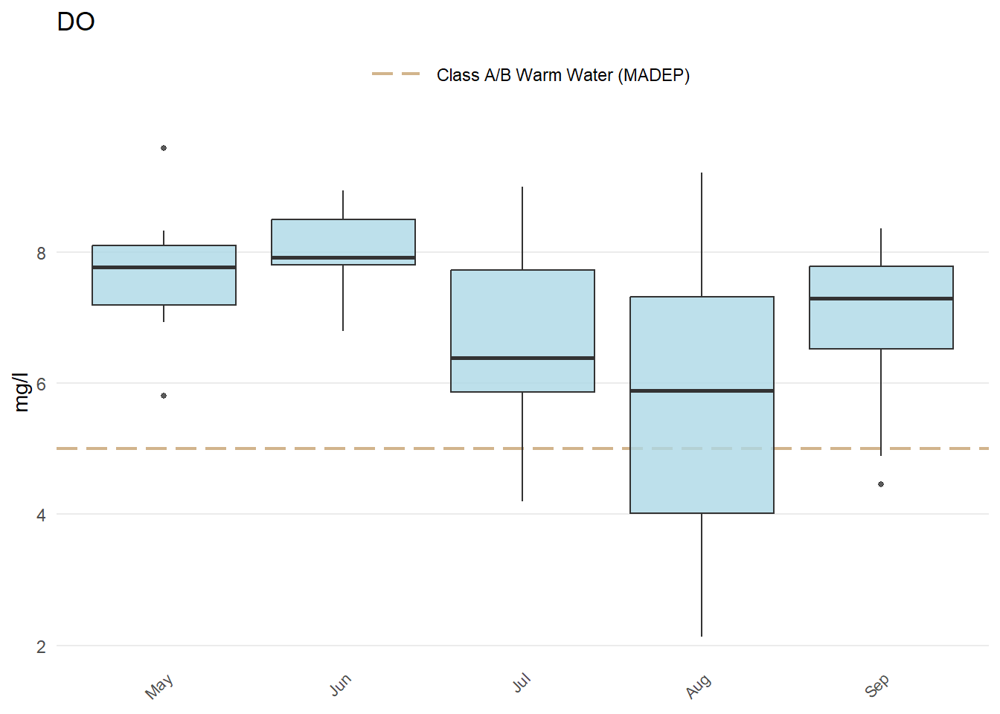

# Install and load the MassWateR package
install.packages("MassWateR")
library(MassWateR)MassWateR Tutorial
Introduction
In this tutorial, we will explore how to use the MassWateR package in R to analyze water quality data. The MassWateR package is a useful tool for environmental scientists and researchers who work with water quality data. We will go through the provided code step by step.
Step 1: Install and Load MassWateR
Before using the MassWateR package, you need to install it and load it into your R session. Run the following commands:
Step 2: Import Data
Next, you’ll import the required datasets: results data, data quality objectives files for accuracy, frequency, and completeness, site metadata, and WQX metadata. You can use the provided example datasets or your own data. The example datasets are available in the MassWateR package. To import your own data, you’ll need to save your data as Excel files and specify the file paths in the code below.
# Import results data
respth <- system.file('extdata/ExampleResults.xlsx', package = 'MassWateR')
resdat <- readMWRresults(respth)
# Import dqo accuracy data
accpth <- system.file('extdata/ExampleDQOAccuracy.xlsx', package = 'MassWateR')
accdat <- readMWRacc(accpth)
# Import dqo frequency and completeness data
frecompth <- system.file('extdata/ExampleDQOFrequencyCompleteness.xlsx', package = 'MassWateR')
frecomdat <- readMWRfrecom(frecompth)
# Import site data
sitpth <- system.file('extdata/ExampleSites.xlsx', package = 'MassWateR')
sitdat <- readMWRsites(sitpth)
# Import WQX meta data
wqxpth <- system.file('extdata/ExampleWQX.xlsx', package = 'MassWateR')
wqxdat <- readMWRwqx(wqxpth)Step 3: Create a List of Data Frames
Now, you’ll create a list of input data frames for further analysis.
# Create a list of input data frames
fsetls <- list(res = resdat, acc = accdat, frecom = frecomdat, sit = sitdat, wqx = wqxdat)Step 4: Outliers, QC, Analysis, and WQX
You can perform various analyses on your water quality data using the MassWateR package. Here are some examples:
View Outlier Plot
# View outlier plot for Dissolved Oxygen (DO) by month
anlzMWRoutlier(fset = fsetls, param = "DO", group = "month")
Create Outlier Plots for All Parameters
# Create outlier plots for all parameters by month and save them to the working directory
anlzMWRoutlierall(fset = fsetls, group = "month", output_dir = getwd())Create QC Report
# Create a quality control (QC) report and save it to the working directory
qcMWRreview(fset = fsetls, output_dir = getwd())View Summary of Seasonal Distributions
# View a summary of seasonal distributions of DO for "fresh" water
anlzMWRseason(fset = fsetls, param = "DO", thresh = "fresh")
View Time Series
# View a time series of DO for specific sites in "fresh" water
anlzMWRdate(fset = fsetls, param = "DO", thresh = "fresh", site = c("ABT-026", "ABT-077"))View Summary of Site Results
# View a summary of site results for DO in "fresh" water
anlzMWRsite(fset = fsetls, param = "DO", thresh = "fresh")View Map of Results
# View a map of DO results
anlzMWRmap(fset = fsetls, param = "DO")Create Output for WQX Submission
# Create an output file for WQX (Water Quality Exchange) submission in the working directory
tabMWRwqx(fset = fsetls, output_dir = getwd())Conclusion
You’ve learned how to use the MassWateR package to import and analyze water quality data in R. Feel free to modify and extend these analyses to suit your specific research needs.